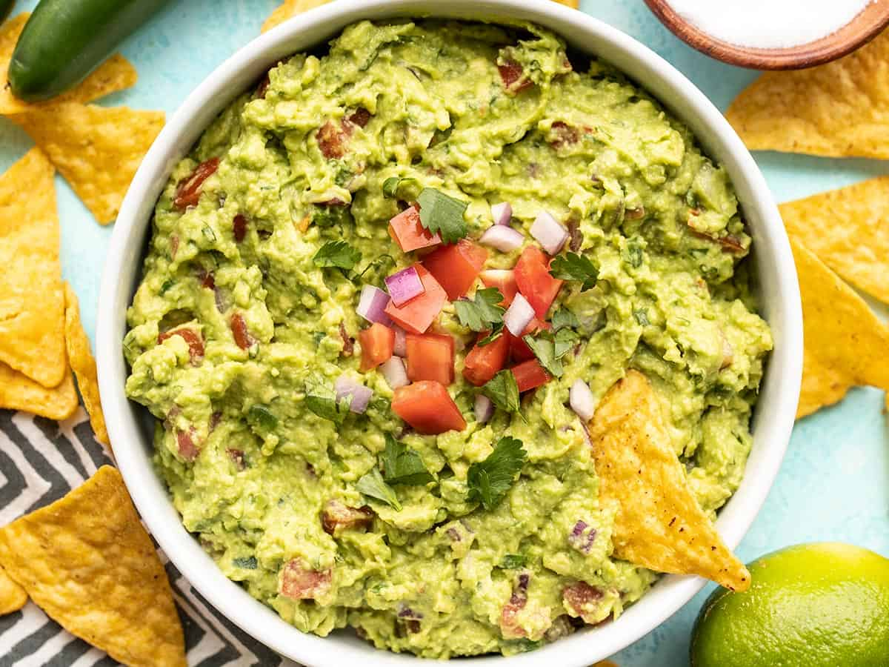

Guacamole
Description
This homemade guacamole is super fresh and tasty. You can use it with nachos or in tortillas and what else. Guacamole is a perfect side for many meals and snacks.
Ingredients
- Avocados: Of course, you'll need avocados!
- Lime: Lime juice adds brightness and slows down the browning process.
- Salt: A teaspoon of salt enhances the flavors of the other ingredients.
- Vegetables: You'll also need an onion and roma tomatoes.
- Herbs and spices: Fresh cilantro, minced garlic, and cayenne pepper add tons of flavor.
Steps
- Mash avocados, lime juice, and salt together in a medium bowl; mix in tomatoes, onion, cilantro, and garlic. Stir in cayenne pepper.
- Serve immediately, or cover and refrigerate for 1 hour for improved flavor.